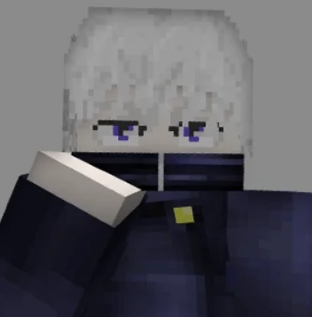

Inumaki: Al seleccionar la habilidad de discurso maldito "Explotar", esta se transforma en "Morir". Esta habilidad modificada inflige daño considerable a los enemigos impactados y los impulsa hacia arriba.